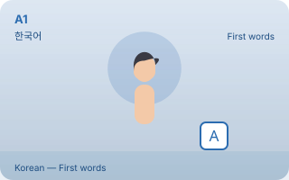
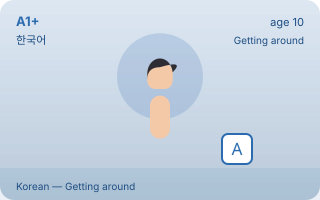
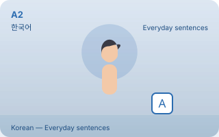
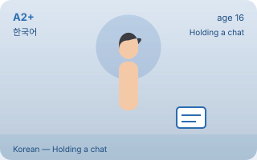
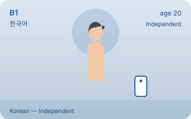
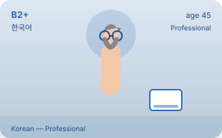
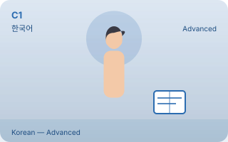
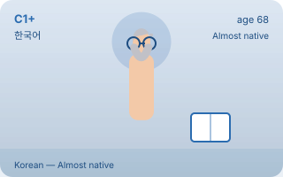

EkGuru › Languages › Korean › Levels
Korean levels — A1 to C2
Korean uses the six CEFR levels (A1–C2) and the same eleven rungs as the rest of the site. Extra tracks such as A3 or B3 appear below only when those lessons were authored — they are not CEFR levels. Empty extra levels are not counted as a course.
The whole course, counted. 36 lessons, 288 words with romanisation and 1248 questions with answers — every one of them readable on the level pages below.
Published levels
The eleven rungs, in pictures
CEFR has six levels. This site also names the half-step after each of the first five — A1+, A2+, B1+, B2+, C1+ — because that is the honest label for the learner who has finished the lessons but is not yet ready for the next level. A3, B3 and C3–C5, when they appear on a course, are optional EkGuru extension tracks, not CEFR rungs, and they are published only with authored lessons. A page that prints empty extra levels as if an examiner set them is a page an examiner stops trusting. The full explanation is here.







